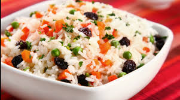

Arroz a Grega
Autor: Jorge Campos

Tempo de Preparação: 1 hora
Rendimento: 10 porções
Informação Nutricional:
300 kcal,
10 g
Ingredientes:
-
3 xícaras de arroz
-
6 xícaras de água
-
1 caixa de passas
-
Queijo parmesão ralado
-
5 colheres de ervilha
-
Manteiga
-
Óleo
-
Pimentão, cebola, salsa, cebolinha verde e cenoura
-
Sal
Modo de Preparo:
Leve uma panela ao fogo com água, sal e um pouco de óleo
Quando a água ferver, coloque o arroz lavado e escorrido
Mexa o suficiente, diminua o fogo e deixe a água secar
Aí, então, retire o arroz do fogo, tampe bem e deixe por mais algum tempo até ficar completamente pronto
À parte, leve uma caçarola ao fogo com a manteiga e aí frite as passas e as ervilhas
Jogue, em seguida, em uma travessa grande
Junte a cebolinha verde, a cenoura, o pimentão, a cebola - cortados em pequenos pedaços - a salsa e o parmesão
Junte, por fim, o arroz cozido, misturando tudo cuidadosamente
106 pessoas avaliaram essa receita
...